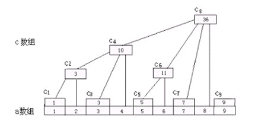

BLOGS

在HackerRank上刷题还是很开心的，这次决定不仅Push代码，再写下对于题目的分析以及算法的理解。

Binary Indexed Tree是数组的一种用空间换时间的解决方案，它的修改和求和都是O(logN)。具体用法、介绍和完整C++ Template代码在项目
在HackerRank上刷题还是很开心的，这次决定不仅Push代码，再写下对于题目的分析以及算法的理解。
Binary Indexed Tree是数组的一种用空间换时间的解决方案，它的修改和求和都是O(logN)。具体用法、介绍和完整C++ Template代码在项目